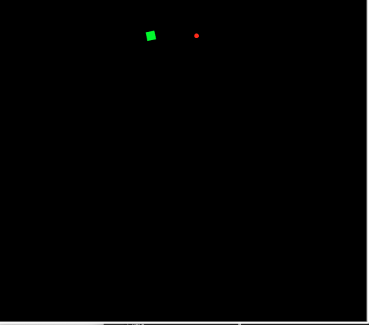
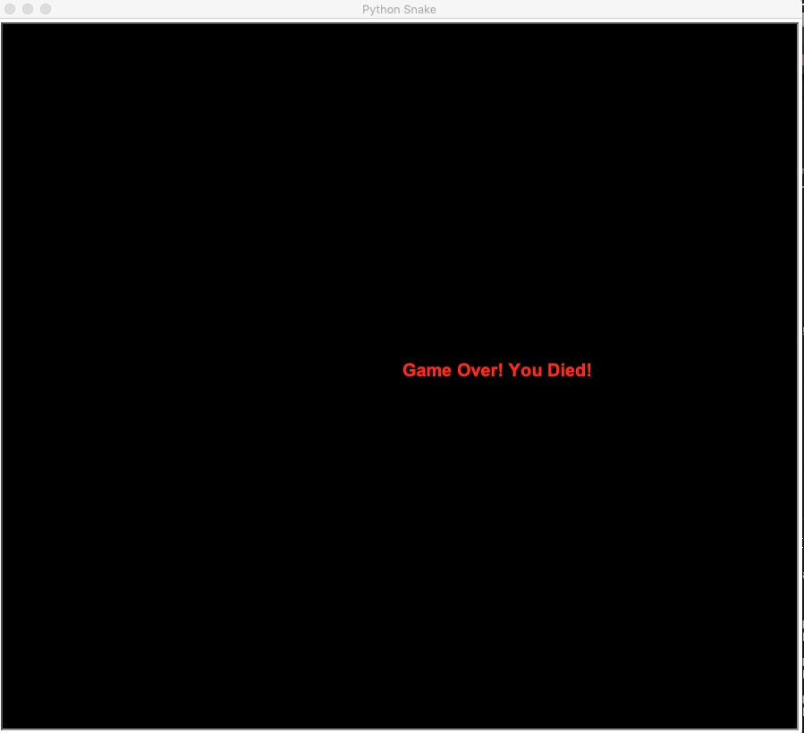

Home
Portfolio
About Me
This is my Portfolio Page!

PLTW 1.1 Project: "Snake" Game


This is my first project in AP Computer Science. Our group created a semi-snake game with out own animations, moving the snake around the page through different while loops. The snake head starts at a certain point, and moves up in the loop toward an apple. It eats the apple, and then the apple dissappears and moves to another location. The snake continues to move in its set loop, and comes across the next apple, and eats it, and so on. At the end of the program, we made it so the snake eventually collides with the wall, and it stops and turns grey in color. After this, we added in a prompt, saying "Game Over. You died :(".
PLTW 1.2 Project: "Snake" Survival Game v2
This is my second project in AP Computer Science. Since the first project was all automated, this time, we decided to use the onkeypress command and input keys in order to make the individual move the snake manually. The user must try and eat all the apples in order to beat their high score. If they run into a wall, or themselves, the score resets, and they must start again. Also, at the beginning of the game it asks for your name, and after you enter it, the game will start.
PLTW 1.3 Project: Space Race Game
This is the third project I have created in this class. This project was similar to my previous project in that it required user input of keys, however it was more advanced in that it incorporated other moving "turtles" on the screen moving side by side along with the space ship. The game starts at the bottom, where the timer starts. As the timer keeps running, you must go around the moving obstacles and collect the 3 stars without getting hit by another asteroid, or without crashing into the wall. If you get hit by an asteroid, the game resets. If you make it to the end, a congratulations message will display. 5>
Scratch Project: Mario Run
This is the fourth project we have created in class. We took a break from PLTW, and instead spent a few days on scratch. In our project, we used events, list, animation, outfit change, sound response, and more to create a Mario game. In this game, we programmed input keys for the user to control a mario in three different stages. In each of these stages, the person needs to jump around different objects, and avoid different things to reach the end pole. At the end, the game will display an end message, and have a sound effect.